01 / персиковое настроение↗
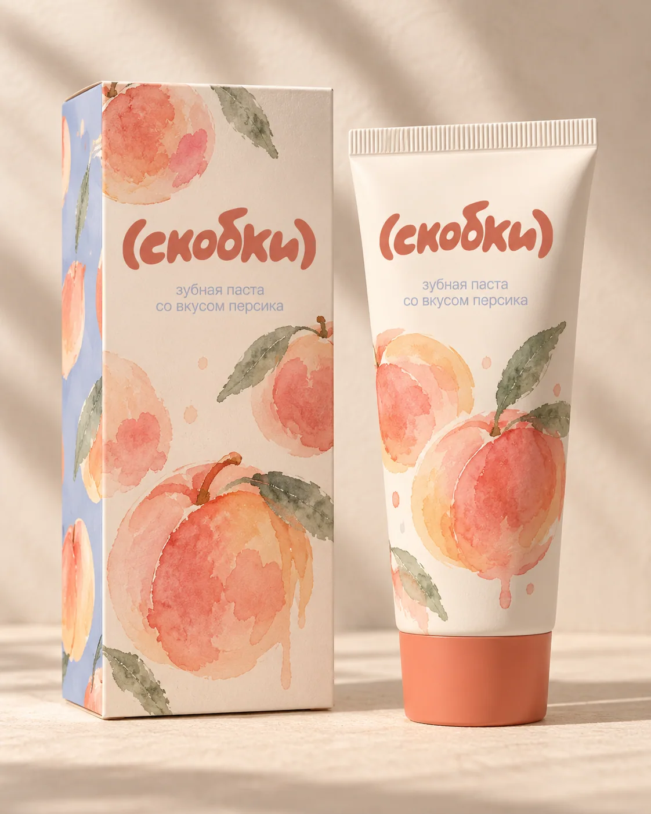
паста
персиковая, конечно
брекеты — это уже достаточно.
всё остальное может быть милым.
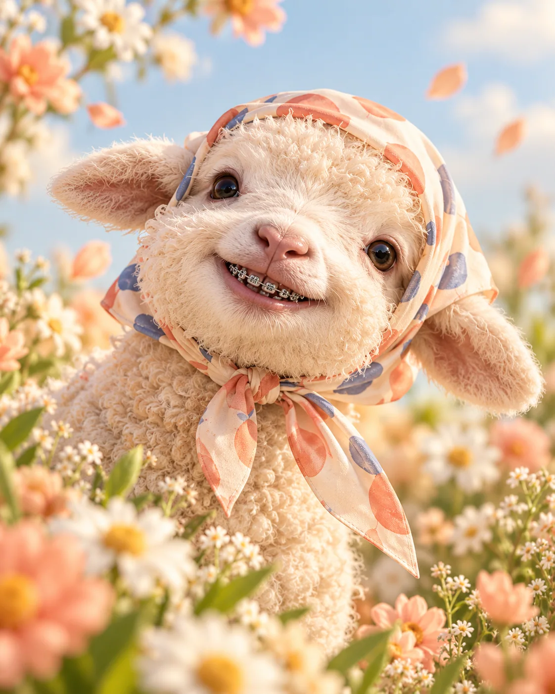
[ а что, так можно было? ]
Маленькие вещи, которые делают каждый день приятнее. Просто, понятно, с собой.
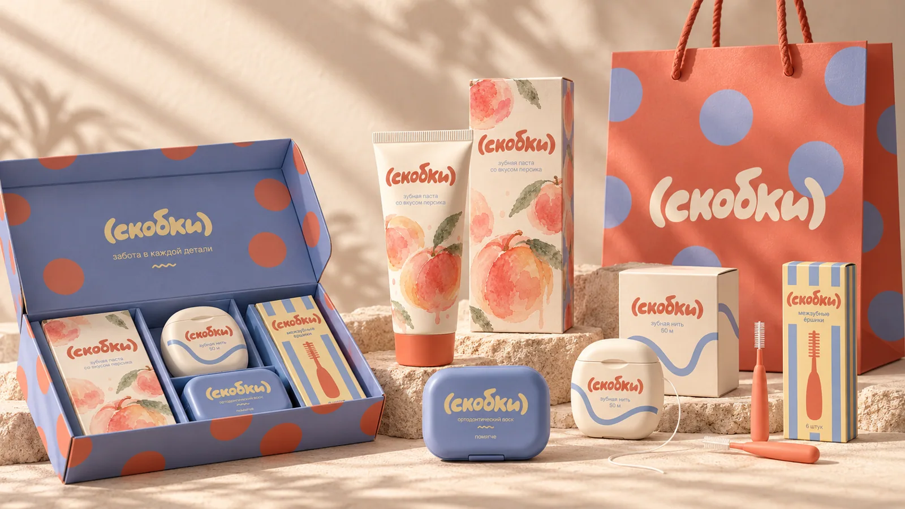
У каждого помощника свой характер. Выбирай тех, кто будет рядом каждый день.

персиковая, конечно
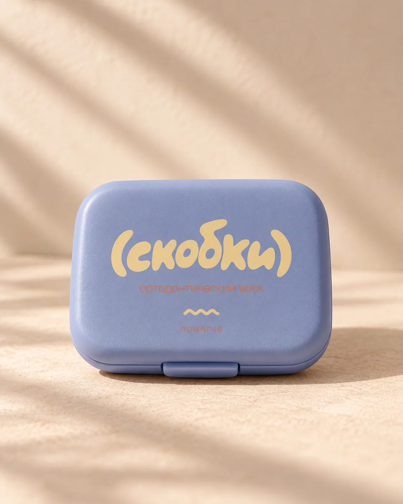
маленький футляр спокойствия
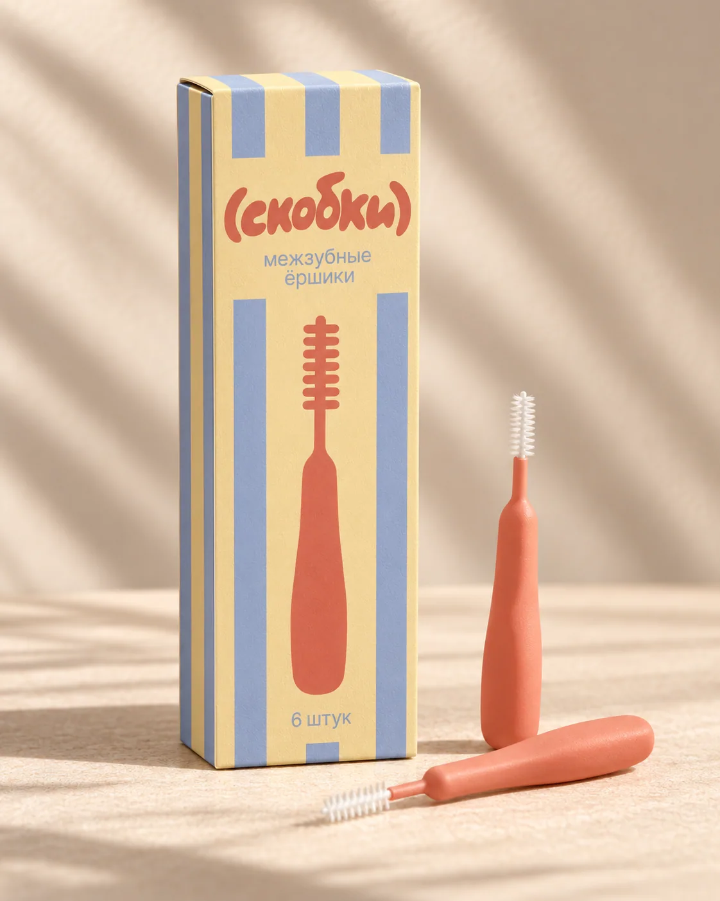
для маленьких промежутков
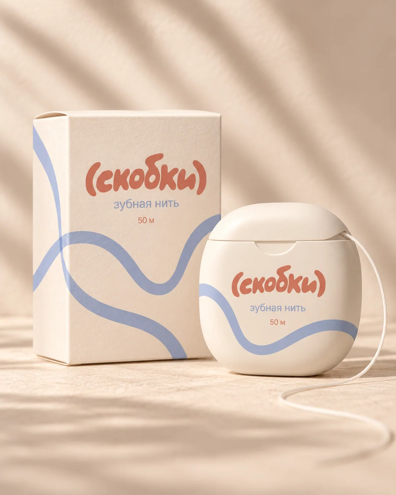
в своём ритме 〰
Стартовый набор для ежедневного ухода — когда всё нужное уже собрано и не нужно искать по отдельности.
собрать свой ↗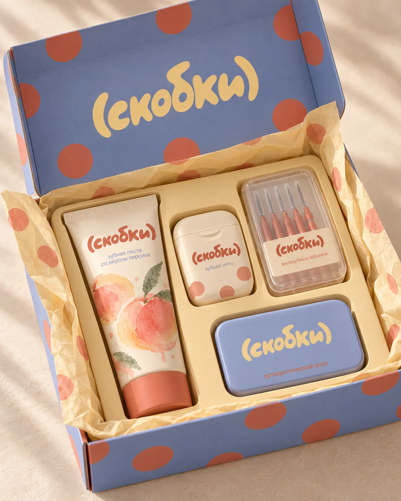
с любовью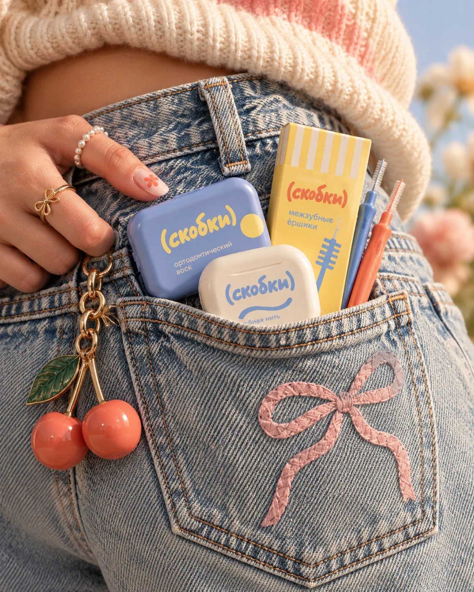
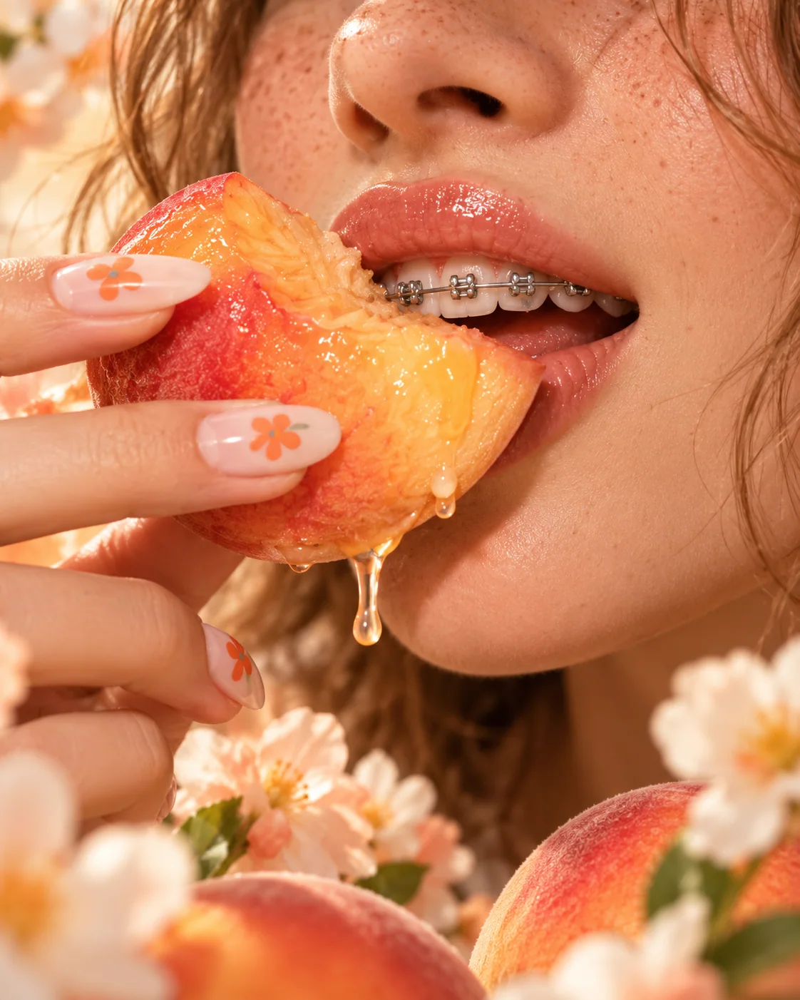
на учёбу, в поездку, на встречу, в обычный вторник. уход не должен останавливать жизнь.
♥три быстрых вопроса — и твой маленький набор готов.
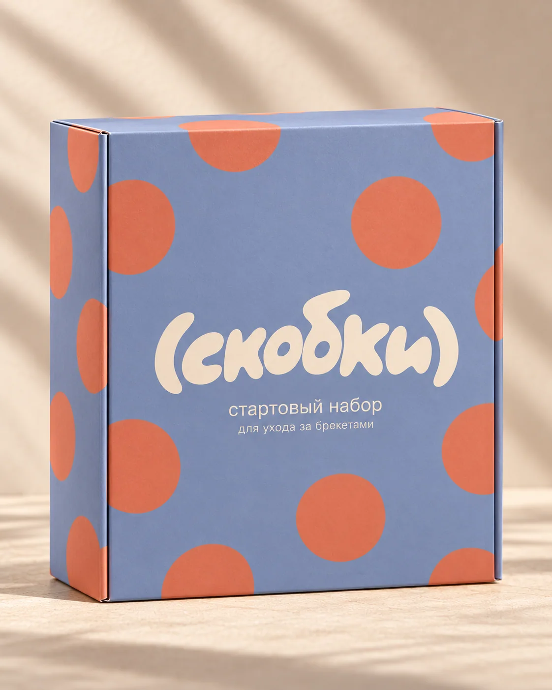
твой наборПодбор — игровая подсказка, а не индивидуальная стоматологическая рекомендация.
Наша любимая часть — как маленькие предметы становятся частью твоего дня.
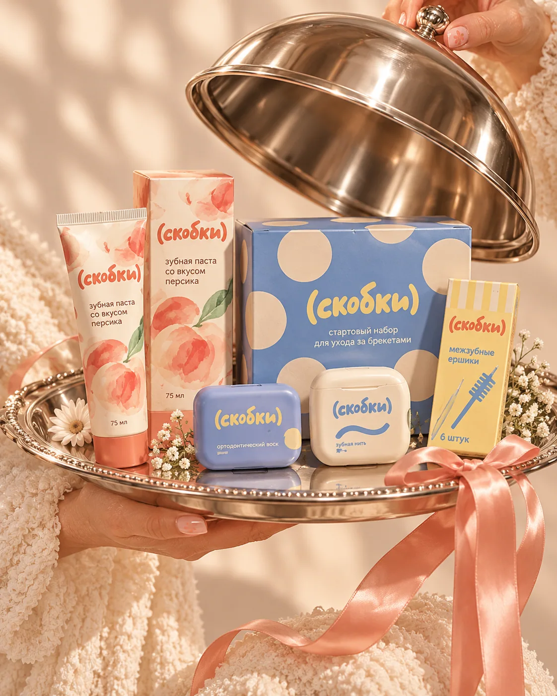
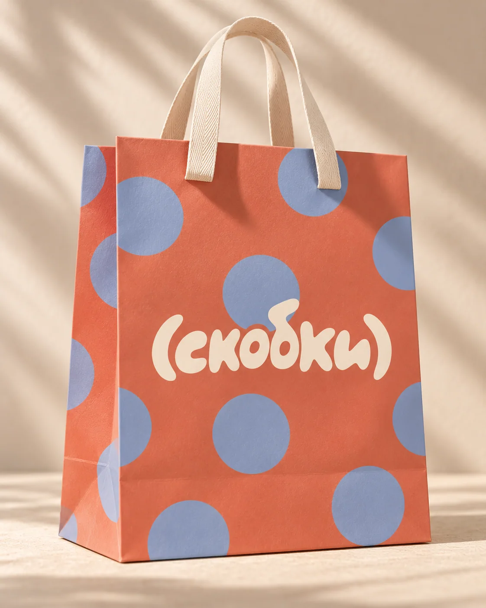
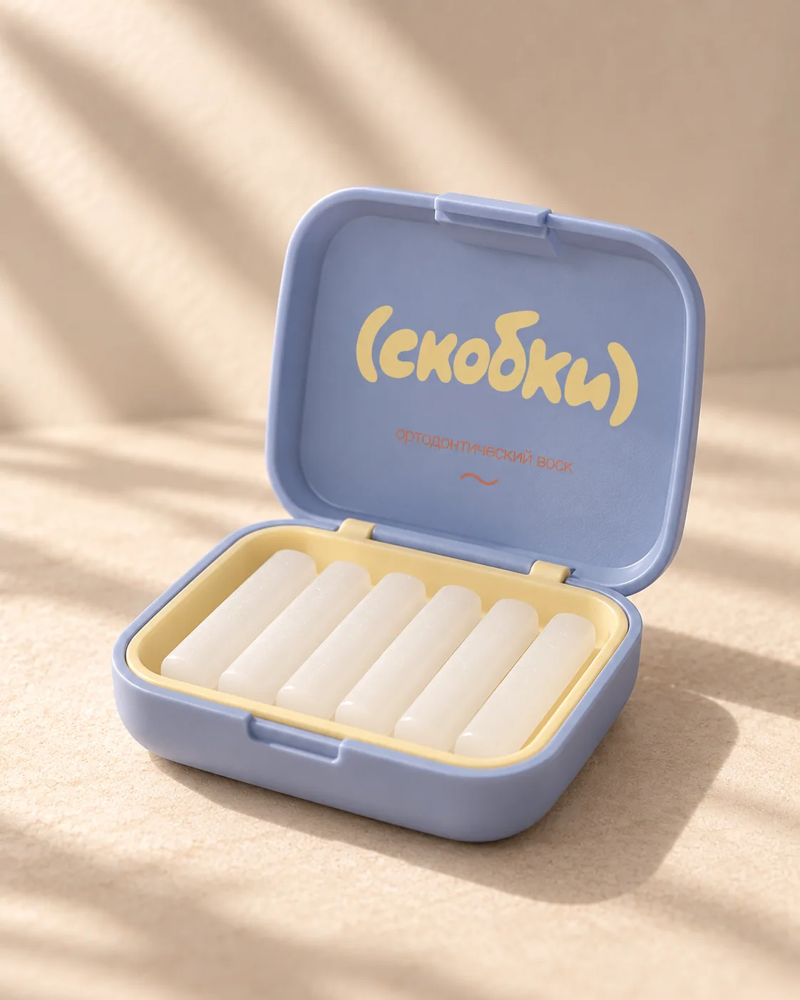
Сейчас здесь концептуальные изображения. Позже заменим этот блок реальными фото и видео сообщества.
Его используют для временного уменьшения трения брекетов о слизистую. Следуй инструкции производителя и рекомендациям ортодонта.
Небольшой дорожный комплект: подходящие ёршики, нить, а при необходимости — воск и другие средства, которые рекомендовал твой специалист.
Когда щетинки изнашиваются или деформируются. Частота зависит от использования — ориентируйся на инструкцию к конкретному изделию.
Да! Выше есть игровой конструктор. Перед реальным заказом ассортимент и комплектацию нужно будет подтвердить.